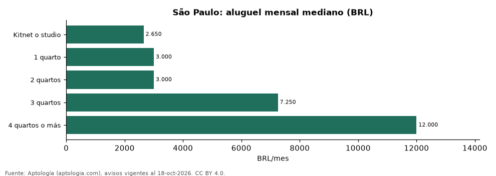

Aluguel em São Paulo por número de quartos: kitnet, 1, 2, 3 y 4 quartos (octubre 2026)
Estudio con datos abiertos (CC BY 4.0). Versión original: https://github.com/elbroker/aptologia-datos/tree/main/estudios/aluguel-por-numero-de-quartos-sao-paulo-2026 · DOI: 10.5281/zenodo.23481455
En São Paulo un apartamento de 2 quartos se alquila en la mediana por 3.000 reales (USD 590) al mes, igual que uno de 1 quarto, y uno de 3 quartos por 7.250 reales (USD 1.425). Un kitnet o studio se pide en 2.650 reales (USD 521), y por m² cuesta 96 reales (USD 18,8) frente a 56 reales (USD 11,1) en 2 quartos.
Resumen: analizamos 12.864 anuncios de alquiler de apartamentos, kitnets y studios en São Paulo.
Actualizado: 18 de octubre de 2026 (datos del 18 de octubre de 2026) · Próxima actualización: mensual.

Resumen
| Indicador | Valor |
|---|---|
| Kitnet o studio | 2.650 reales (USD 521) |
| 1 quarto | 3.000 reales (USD 590) |
| 2 quartos | 3.000 reales (USD 590) |
| 3 quartos | 7.250 reales (USD 1.425) |
| 4 quartos o más | 12.000 reales (USD 2.358) |
Aluguel, m² y condomínio por número de quartos
| Tipo | Aluguel (mediana) | Aluguel por m² | Área (m²) | Condomínio (mediana) | Anúncios |
|---|---|---|---|---|---|
| Kitnet o studio | 2.650 reales (USD 521) | 96 reales (USD 18,8) | 27 | 570 reales (USD 112) | 1.988 |
| 1 quarto | 3.000 reales (USD 590) | 81 reales (USD 15,9) | 39 | 700 reales (USD 138) | 3.185 |
| 2 quartos | 3.000 reales (USD 590) | 56 reales (USD 11,1) | 57 | 738 reales (USD 145) | 4.869 |
| 3 quartos | 7.250 reales (USD 1.425) | 60 reales (USD 11,8) | 120 | 1.958 reales (USD 385) | 2.303 |
| 4 quartos o más | 12.000 reales (USD 2.358) | 56 reales (USD 11,1) | 217 | 3.954 reales (USD 777) | 519 |
Medianas; el condomínio es la cuota mensual declarada, aparte del alquiler.
Preguntas frecuentes
Quanto custa alugar um apartamento de 2 quartos em São Paulo? 3.000 reales (USD 590) al mes en la mediana (octubre de 2026), sin condomínio ni IPTU.
Quanto custa uma kitnet em São Paulo? 2.650 reales (USD 521) al mes en la mediana.
Metodología
- Fuente: exportes nocturnos de la base de datos de Aptología (aptologia.com) del 18 de octubre de 2026: avisos vigentes de vivienda en portales inmobiliarios de 13 países, recogidos por Aptología y vistos en línea entre el 11 y el 18 de octubre de 2026. Corte: 18 de octubre de 2026.
- Depuración: se eliminan duplicados exactos (misma ciudad, zona, tipo, precio, moneda, área, habitaciones y baños) y los precios fuera del percentil 1–99 de cada país, operación, moneda y tipo; el precio por m² usa solo avisos con área declarada entre 12 y 2.000 m² y también se recorta al P1–P99.
- Qué se mide: precios pedidos (publicados), no precios de cierre. En arriendo, el canon mensual sin administración, gastos comunes ni condominio.
- Muestra mínima: cada cifra publicada se apoya en al menos 30 avisos; las celdas con menos se omiten.
- Monedas: nunca se mezclan avisos de monedas distintas sin convertirlos. Conversión a dólares con la tasa de mercado de ExchangeRate-API (open.er-api.com, actualización del 18 Oct 2026): 1 USD = 3.182,80 COP, 1 USD = 18,47 M.N, 1 USD = 5,09 BRL, 1 USD = 3,44 PEN, 1 USD = 982,44 CLP, 1 USD = 1.514,57 ARS, 1 USD = 40,20 UYU, 1 USD = 5.705,37 PYG, 1 USD = 61,27 DOP, 1 USD = 0,89 EUR, 1 USD = 11,72 BOB; la UF chilena a 41.178,64 CLP (mindicador,cl. 18-oct-2026). Los avisos publicados en dólares se usan tal cual.
- Moneda: reales brasileños (BRL); equivalencias en dólares con la tasa citada.
- Aluguel: valor mensual pedido, sin condomínio ni IPTU (salvo que se indique).
- Limitaciones: la cobertura depende de los portales que recorre Aptología en cada país y es mayor en las ciudades grandes y en los segmentos medio-alto y alto; el área es la que declara el aviso, sin verificar; los nombres de zona vienen de los portales.
- Privacidad: solo se publican agregados; no se publica ningún dato personal, enlace a avisos ni nombre de anunciante.
- Datos abiertos: datos.csv, licencia CC BY 4.0.
Cómo citar
Pinzón Pineda, D. M. (2026). Aluguel em São Paulo por número de quartos: kitnet, 1, 2, 3 y 4 quartos (octubre 2026). Aptología (aptologia.com). https://github.com/elbroker/aptologia-datos/tree/main/estudios/aluguel-por-numero-de-quartos-sao-paulo-2026. Datos: datos.csv, licencia CC BY 4.0.